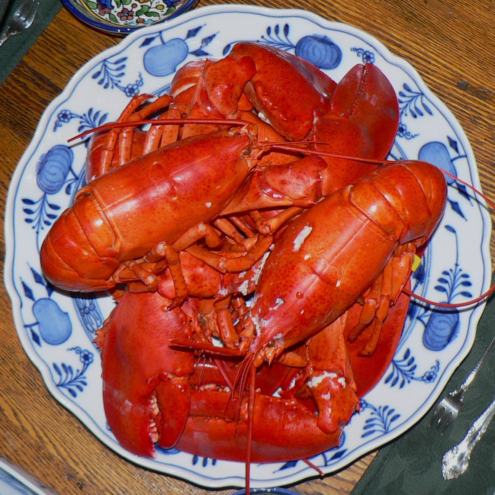
The Bay
Fresh New England seafood
Live lobster and crab, sea scallops, oysters, littleneck clams, salmon and more, sourced from fishermen and small businesses Shaun knows personally.
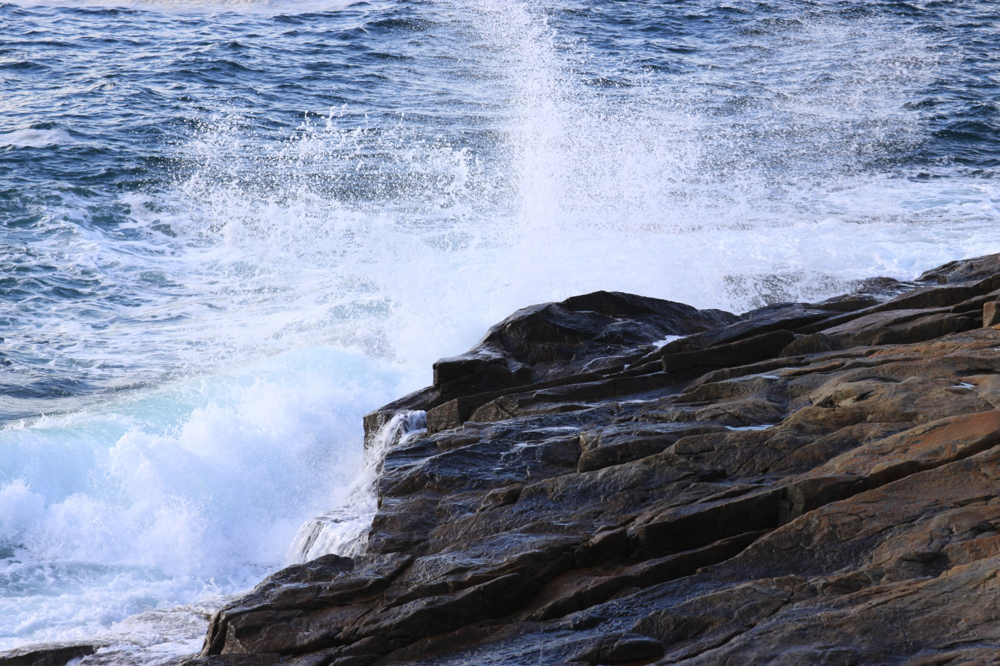
Fresh seafood driven down from Maine, alongside wild blueberries and handmade goods from small Maine businesses. A little piece of Down East in Central Pennsylvania.
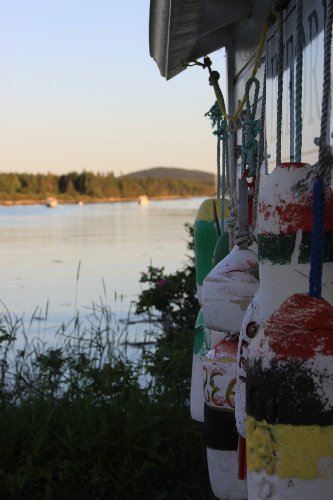
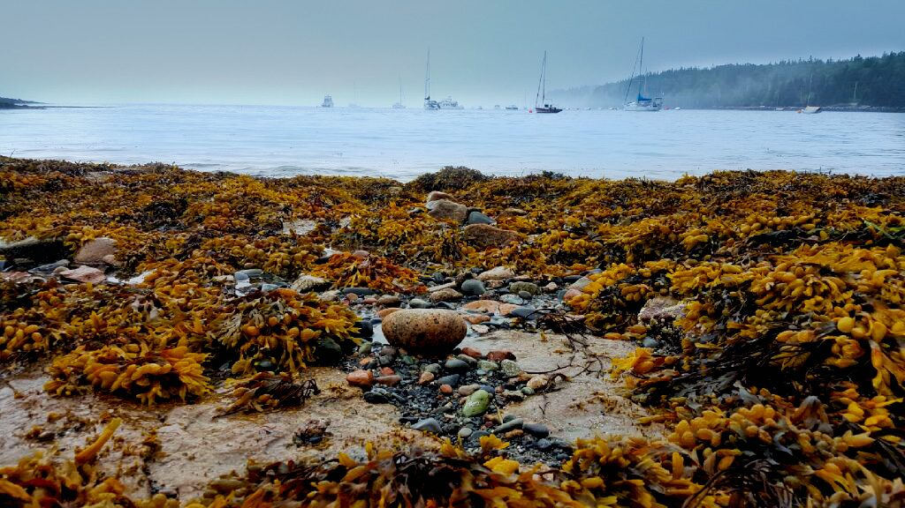
Shaun grew up in Winter Harbor, Maine, where the bay was part of everyday life. Years later, while teaching at Penn State, every trip home ended with a truck full of lobster, scallops and blueberries for friends who could not find anything like it in Central PA.
Christa kept saying it should be a business. In August 2017 it became one. Today Maine Bay & Berry partners with more than 15 small Maine businesses, so the seafood and the goods on our shelves come from people we know and trust.
“I literally go onto the boat and pull the lobsters out of the water myself.”Shaun Knight, co-owner · as told to Town&Gown
Selection changes with every run to the coast. Stop in, or give us a call to see what came in this week.

Live lobster and crab, sea scallops, oysters, littleneck clams, salmon and more, sourced from fishermen and small businesses Shaun knows personally.
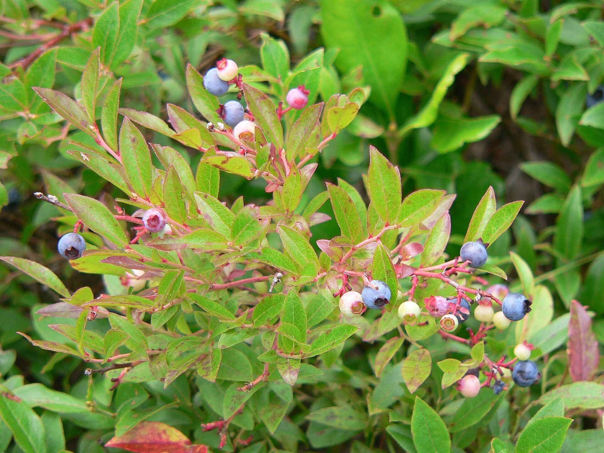
The little ones Maine is famous for, plus the jams, syrups and treats made from them.
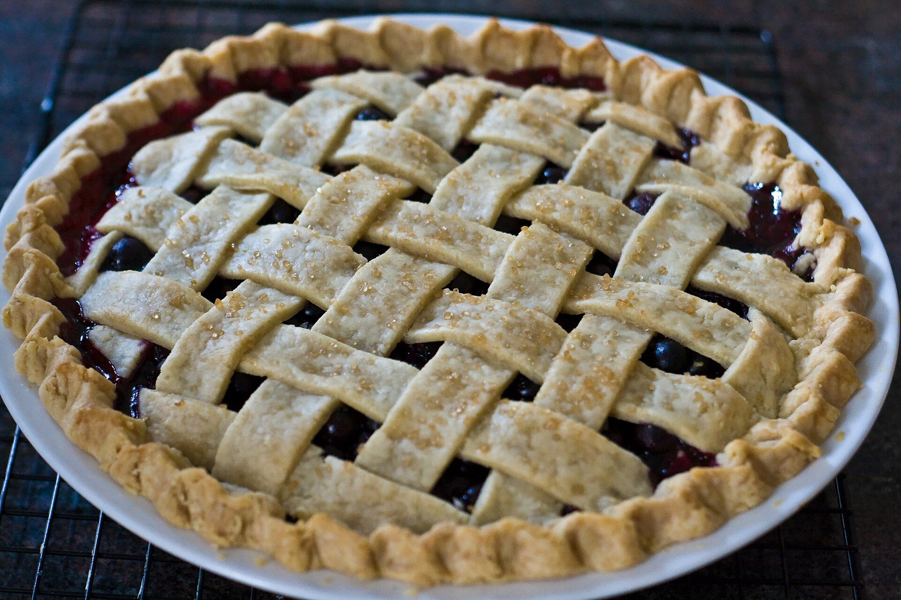
Jams, syrups, cooking sauces and nationally recognized pies from small Maine producers.
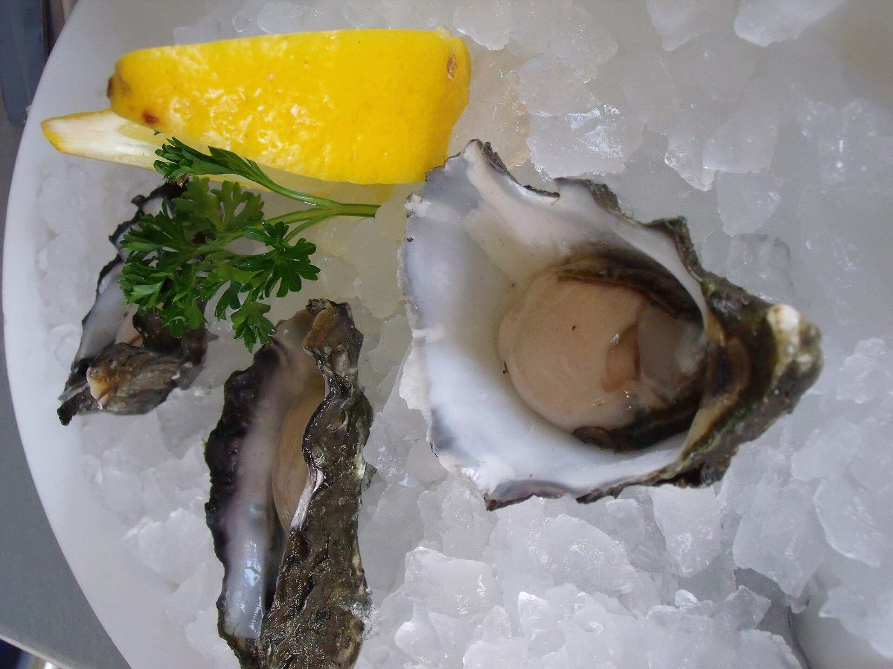
Craft root beer, wild blueberry soda, homemade soaps, and blueberry dog treats for the four-legged regulars.
Want something set aside? Call or message us and we will have it ready.
814.954.1560Our coolers are stocked from fishermen Shaun knows personally, or small businesses he can vouch for. Even our fresh frozen seafood is harvested the day before pickup and flash frozen. Availability changes run to run, so check Facebook or call.
The heart of the counter. Brought down from the coast for lobster boils, rolls and special dinners.
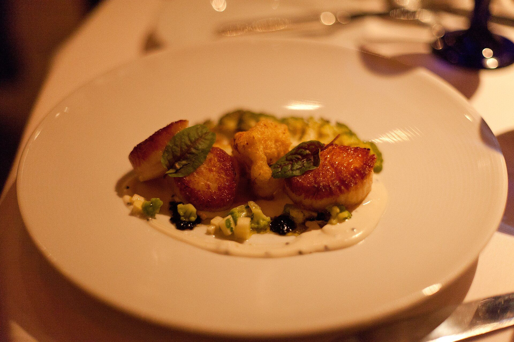
Sweet, meaty scallops that were part of Shaun's very first truckloads home for friends.
Fresh from New England waters, ready for the half shell or the grill.
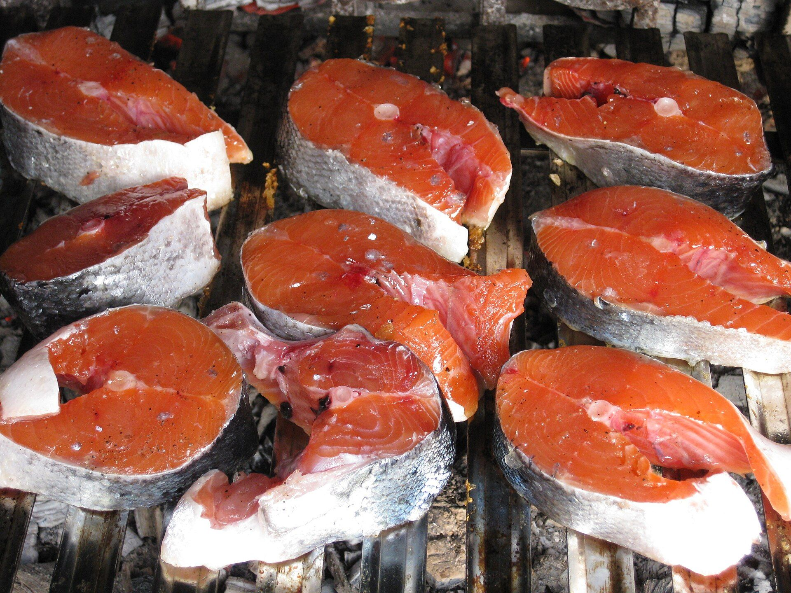
Rich, clean fish for weeknight dinners and weekend grilling.
Live crabs alongside the lobsters when the boats bring them in. A true taste of the Maine coast.
Small, tender clams for steaming, chowder or pasta night.
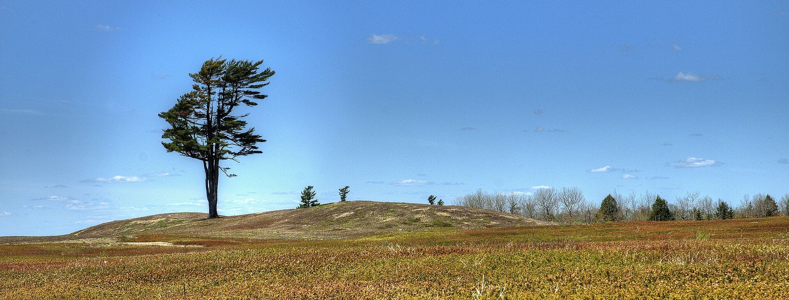
Seafood is not everyone's thing, so the Berry side of the shop is stocked with the best of what Maine grows and makes. A whole wall of wooden shelves, all from socially responsible small businesses in Maine.
Woman-owned bakery behind our biggest seller, the three-pound New England Bog Pie made with wild cranberries and wild blueberries, plus their wild Maine blueberry pie.
Dell and Marie Emerson's family farm, home of the world's largest blueberry, growing wild Maine blueberries that have never been planted.
Maine-made pantry staples and cooking sauces, with new partners added regularly.
Small craft root beer, wild blueberry soda, homemade soaps, and blueberry-infused dog treats.
We would rather get to know you than process a cart. Here is how to make sure your seafood is waiting.
Reach us at 814.954.1560 or on Facebook by 5pm Wednesday with what you would like.
Orders placed by the Wednesday cutoff are guaranteed for pickup on Thursday.
Browse the coolers and pantry shelves at 201 Elmwood Street any day we are open.
Shaun was born and raised in Winter Harbor, Maine, and taught management at Penn State's Smeal College of Business for 15 years. Christa earned her business degree at Penn State and worked in the Executive MBA program. They met at Smeal.
Whenever Shaun went home to Maine, he emailed about 130 friends offering to bring back lobster, scallops and blueberries. The truck always came back full. Christa kept telling him it should be a business, and one summer night on the drive home, they found their spot.
A coastal town where you knew everybody, and the bay was part of daily life.
Maine Bay & Berry opens in a former produce stand on Shiloh Road, decorated with buoys like a true Maine seafood shack.
A second, year-round home opens at The Barn at Lemont on Elmwood Street.
Shaun has made the trek to Maine three or four times a month to bring the catch back himself.
201 Elmwood Street, State College, with 15+ Maine partners on the shelves.
Our list changes with every trip to the coast and every season. Here is the kind of thing you will find. For the exact list, check our Facebook feed or give us a call.
The classic, no-fuss way. Ask us in store for tips on cooking anything you pick up.
The story of the Shiloh Road stand, The Barn at Lemont, and lobsters pulled from the water by hand.
WPSU · I'm Your Neighbor · 2024A short film on the Maine roots behind the business.
Centre Daily TimesA look at the Maine families and makers stocked on our shelves.
Scenes from the coast that inspires everything we carry.
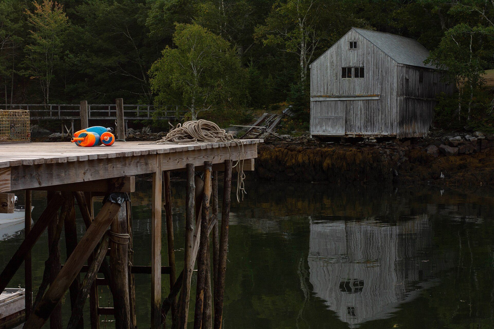
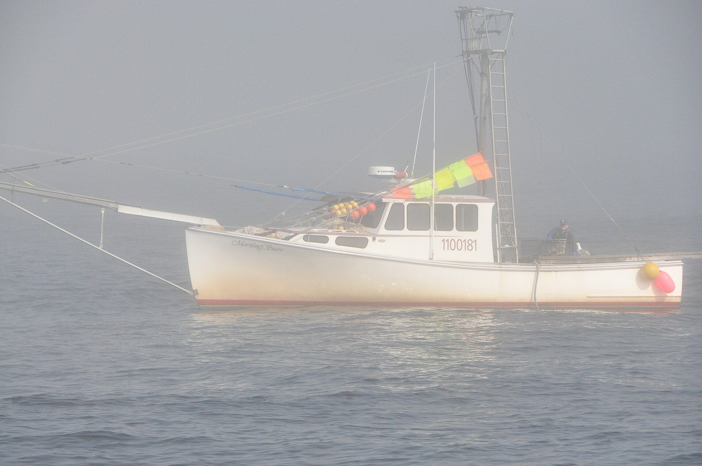
201 Elmwood Street
State College, PA 16801
Ordering fresh product for pickup? Call or message by 5pm Wednesday for guaranteed Thursday pickup.
Monday to Saturday 10am to 6:30pm, and Sunday 11:30am to 4:30pm.
We are closed for all major holidays. Plan holiday seafood orders ahead.
Call 814.954.1560 or message us on Facebook by 5pm Wednesday for guaranteed pickup on Thursday.
We are a shop you visit. Orders are picked up in store at 201 Elmwood Street, State College.
Our Facebook page lists available fresh products. You are also welcome to call.
Directly from Maine and New England fishermen Shaun knows personally, or small businesses he can vouch for. Shaun drives to Maine himself to bring it back.
Plenty. Wild Maine blueberries, Two Fat Cats pies, jams, syrups, sauces, craft sodas, soaps and even blueberry dog treats.
We have been open to it from the start. Give us a call to talk it through.
Our weekly fresh list, new Maine partners and seasonal arrivals are posted on Facebook first. Join our 29K followers.
Follow on FacebookReach out and we will get back to you. Check our Facebook page for this week's fresh arrivals.